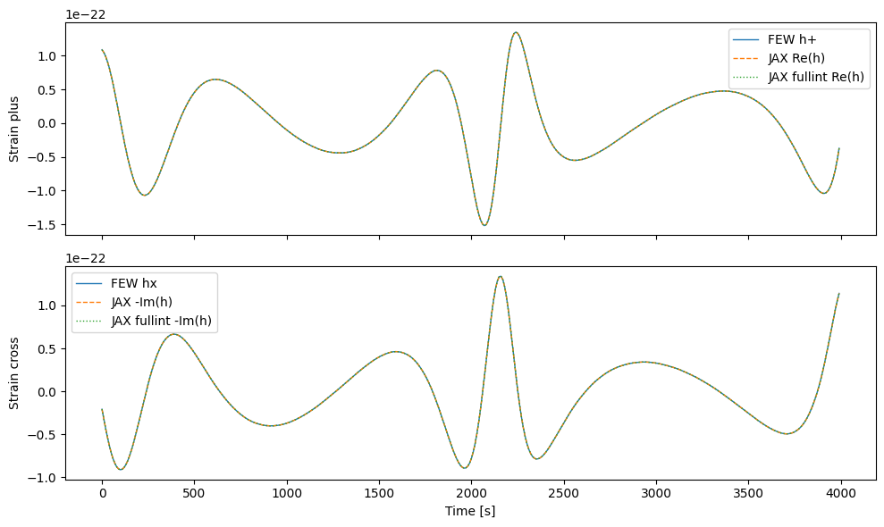
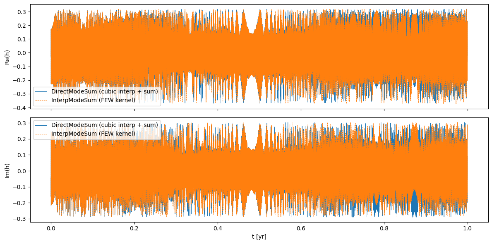
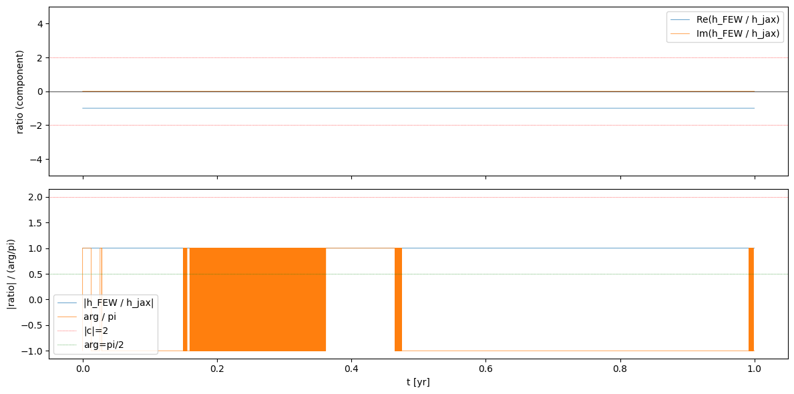
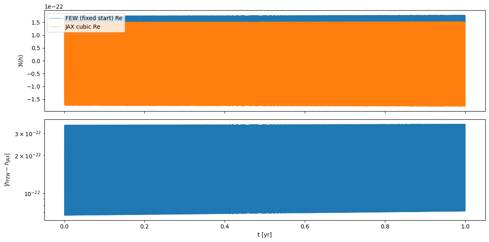
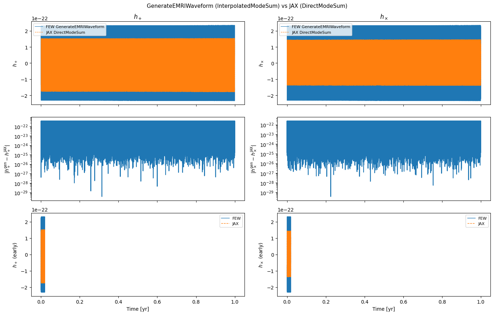
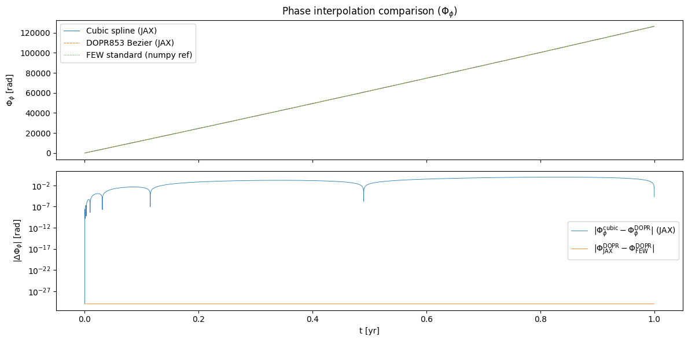

EMRI_wf_JAX
Build the full EMRI waveform with a direct-mode-sum implementation.
Notebook structure
Setup — trajectory, amplitude generation, and mode selection.
Alternative Implementations — three earlier builders, kept for reference:
Function |
Strategy |
Materialises |
Notes |
|---|---|---|---|
|
vmap over a batch of EMRIs |
Yes — must be provided as input |
Good for many short EMRIs on the same grid |
|
|
No — only |
JIT shapes tied to |
|
Upsample all modes in one pass |
Yes — |
Utility helper, not a standalone waveform builder |
Primary Implementation — Interp_and_modesum_WFbuilder.
Streams over mode batches on the full dense time grid. Per batch: a single fused kernel interpolates the modes, computes one shared exp(−i·phase), and reduces via two GEMVs. The (n_t_dense, n_m) array is never materialised. Use this for production.
[1]:
import os
idx = 2
os.environ["CUDA_VISIBLE_DEVICES"] = str(idx)
os.environ["XLA_PYTHON_CLIENT_PREALLOCATE"] = "false"
os.environ["FEW_DATA_DIR"] = "/home/fedefant/.local/share/few/v2.0.0/download"
[2]:
import time
import numpy as np
import scipy as sp
import matplotlib.pyplot as plt
import jax
import jax.numpy as jnp
#import cupy
jax.config.update("jax_enable_x64", True)
import psutil
import few
from few.trajectory.ode.flux import KerrEccEqFlux
from few.trajectory.inspiral import EMRIInspiral
from few.utils.geodesic import get_separatrix
from few.summation.directmodesum import DirectModeSum
from few.waveform import GenerateEMRIWaveform
from few.waveform.waveform import FastKerrEccentricEquatorialFlux
from few.utils.constants import MTSUN_SI, YRSID_SI
from few.utils.utility import get_mismatch
Gpc = few.utils.constants.Gpc
MRSUN_SI = few.utils.constants.MRSUN_SI
cupy = None
if cupy is not None:
xp = cupy
else:
xp = np
def report_mem(tag):
proc = psutil.Process()
rss_gb = proc.memory_info().rss / 1024**3
msg = [f"{tag} | CPU RSS: {rss_gb:.2f} GB"]
if cupy is not None:
try:
free, total = cupy.cuda.runtime.memGetInfo()
msg.append(f"GPU: {((total-free)/1024**3):.2f} GB used / {total/1024**3:.2f} GB total")
except Exception as exc:
msg.append(f"GPU: unavailable ({exc})")
print(" | ".join(msg))
[3]:
# JAX GPU preallocation diagnostic
report_mem("before jax warmup")
print("JAX backend:", jax.default_backend())
print("JAX devices:", jax.devices())
_warm = jnp.ones((1,))
_ = _warm.block_until_ready()
report_mem("after jax warmup")
before jax warmup | CPU RSS: 0.30 GB
JAX backend: gpu
JAX devices: [CudaDevice(id=0)]
after jax warmup | CPU RSS: 0.73 GB
[4]:
cfg = few.get_config_setter(reset=True)
cfg.set_log_level("info")
# FastKerrEccentricEquatorialFlux bundles trajectory, AmpInterpKerrEccEq,
# GetYlms, ModeSelector, and InterpolatedModeSum. We reuse its components
# directly so the manual pipeline is guaranteed to use the same setup.
report_mem("before model init")
if cupy is not None:
try:
cupy.get_default_memory_pool().free_all_blocks()
except Exception:
pass
try:
model = FastKerrEccentricEquatorialFlux(force_backend='gpu')
report_mem("after model init (gpu)")
except Exception as exc:
print(f"GPU model init failed: {exc}")
print("Falling back to CPU backend for model init.")
model = FastKerrEccentricEquatorialFlux(force_backend='cpu')
report_mem("after model init (cpu)")
few_traj = model.inspiral_generator
# The mode threshold determines how many modes we are going to have
mode_selection_threshold = 1e-5
mode_selector_kwargs = dict(
mode_selection_threshold = mode_selection_threshold,
include_minus_mkn = True,
)
before model init | CPU RSS: 0.73 GB
after model init (gpu) | CPU RSS: 1.74 GB
[17]:
m1, m2 = 1e6, 10.0
a, e0, x0 = 0.7, 0.4, 1.0
T = 1.0 # observation time [yr]
dt = 10.0 # cadence [s]
dist = 1.0 # luminosity distance [Gpc]
theta, phi = np.pi / 3, np.pi / 3 # observer angles for Ylm
report_mem("start trajectory")
# Backward integration from the separatrix to find the initial p0, e0.
p0_sep = few_traj.inspiral_generator.func.separatrix_buffer_dist + get_separatrix(a, e0, x0) + 1e-6
_, p_back, e_back, *_ = few_traj(m1, m2, a, p0_sep, e0, x0, T=T, integrate_backwards=True)
# Forward trajectory from the backward-integrated initial conditions.
t_traj, p_arr, e_arr, x_arr, Phi_phi_test, Phi_theta_test, Phi_r_test = few_traj(m1, m2, a, p_back[-1], e_back[-1], x0, T=T)
report_mem("after trajectory")
# Amplitudes at each sparse trajectory point (GPU → numpy via model.xp).
teuk_modes = model.amplitude_generator(a, model.xp.asarray(p_arr), model.xp.asarray(e_arr), x0)
report_mem("after teuk_modes")
# Ylms for every (l, m) pair in the model's mode set.
ylms_full = model.ylm_gen(model.unique_l, model.unique_m, theta, phi)[model.inverse_lm]
report_mem("after ylms_full")
# Mode selection — stable FEW 2.0.0 API:
# ModeSelector(l_arr, m_arr, n_arr, ...) at init (done inside model)
# __call__(teuk_modes, ylms, modeinds, fund_freq_args=...) at runtime
# returns (teuk_sel, ylms_sel, ls, ms, ns) — no ks; equatorial ⇒ k=0
modeinds = [model.l_arr, model.m_arr, model.n_arr]
fund_freq_args = (m1, m2, a,
model.xp.asarray(p_arr),
model.xp.asarray(e_arr),
model.xp.asarray(x_arr),
model.xp.asarray(t_traj))
teuk_sel, ylms_sel, ls, ms, ns = model.mode_selector(
teuk_modes, ylms_full, modeinds,
fund_freq_args=fund_freq_args,
**mode_selector_kwargs,
)
report_mem("after mode_selector")
teuk = jnp.asarray(teuk_sel) # (n_t, n_m) complex128
ylms = jnp.asarray(ylms_sel) # (2*n_m,) complex128
ls = jnp.asarray(ls)
ms = jnp.asarray(ms)
ns = jnp.asarray(ns)
ks = jnp.zeros_like(ls) # equatorial orbit: k = 0 for all modes
report_mem("after jnp arrays")
n_t_traj, n_m = teuk.shape
print(f"trajectory grid : n_t={n_t_traj}, n_m={n_m}")
start trajectory | CPU RSS: 8.61 GB
after trajectory | CPU RSS: 8.64 GB
after teuk_modes | CPU RSS: 8.64 GB
after ylms_full | CPU RSS: 8.64 GB
after mode_selector | CPU RSS: 8.64 GB
after jnp arrays | CPU RSS: 8.64 GB
trajectory grid : n_t=64, n_m=1458
Alternative Implementations
Three earlier waveform builders preserved for reference and benchmarking. ``Interp_and_modesum_WFbuilder`` (see Primary Implementation below) is the recommended function for production runs.
[33]:
# -------------------------------------------------------------------
# Alternative 1: direct mode sum, batched over a collection of EMRIs
# -------------------------------------------------------------------
# Strategy: pad all EMRIs to the same (n_t_max, n_m_max), stack along a
# leading batch axis, then vmap _per_emri_direct_mode_sum over that axis.
#
# Use case: evaluating many EMRIs at once where each has already been
# up-sampled to the same dense time grid (e.g. via `interpolator`).
#
# Limitation: the full (n_t_dense, n_m) interpolated mode array must be
# provided as input. At dt=10 s (n_t ≈ 3.2 M, n_m=350) that is ~17 GB
# per EMRI on GPU — use the primary implementation to avoid this.
# Straightforward from the FEW code, with some jax.jit and jax.vmap added.
# Note that the mode sum is implemented in the time domain, so the input teuk array is already
# interpolated to the dense time grid.
@jax.jit
def _per_emri_direct_mode_sum(
teuk, # complex128 (n_t_max, n_m_max)
ylms, # complex128 (2 * n_m_max,) [pos_m | neg_m]
ls, ms, ks, ns, # float64 (n_m_max,)
Phi_phi, Phi_theta, Phi_r, # float64 (n_t_max,)
time_mask, # bool (n_t_max,) — False on padded time steps
mode_mask, # bool (n_m_max,) — False on padded modes
):
"""Direct mode sum for one (possibly time/mode-padded) EMRI."""
n_m = ms.shape[0]
ylm_pos = ylms[:n_m]
ylm_neg = ylms[n_m:2 * n_m]
phase_arg = (ms * Phi_phi[:, None]
+ ks * Phi_theta[:, None]
+ ns * Phi_r[:, None])
w1 = jnp.sum(
mode_mask[None, :]
* ylm_pos[None, :] * teuk
* jnp.exp(-1j * phase_arg),
axis=1,
)
pos_m_mask = (ms > 0) & mode_mask
sign = (-1.0) ** ls
w2 = jnp.sum(
pos_m_mask[None, :]
* sign[None, :] * ylm_neg[None, :]
* jnp.conj(teuk)
* jnp.exp( 1j * phase_arg),
axis=1,
)
return (w1 + w2) * time_mask
# vmap over the leading EMRI axis — every argument must carry a batch dim.
_per_emri_direct_mode_sum_batched = jax.vmap(
_per_emri_direct_mode_sum,
in_axes=(0,) * 11,
)
# Wrapper to handle batching and padding of multiple EMRIs.
# All inputs are pre-padded to uniform (n_t_max, n_m_max) and stacked along a leading EMRI axis.
# EMRIs are processed `batch_size` at a time to manage memory usage.
def jax_direct_mode_sum(
teuk_pad, ylms_pad,
ls_pad, ms_pad, ks_pad, ns_pad,
Phi_phi_pad, Phi_theta_pad, Phi_r_pad,
time_mask, mode_mask,
batch_size=50,
):
"""Batched direct mode-sum over a population of (padded) EMRIs.
All inputs are pre-padded to uniform (n_t_max, n_m_max) and stacked
along a leading EMRI axis. EMRIs are processed `batch_size` at a time.
Returns complex128 waveforms of shape (n_emri, n_t_max).
"""
n_emri = teuk_pad.shape[0]
out_chunks = []
arrays = [
(teuk_pad, jnp.complex128),
(ylms_pad, jnp.complex128),
(ls_pad, jnp.float64),
(ms_pad, jnp.float64),
(ks_pad, jnp.float64),
(ns_pad, jnp.float64),
(Phi_phi_pad, jnp.float64),
(Phi_theta_pad, jnp.float64),
(Phi_r_pad, jnp.float64),
(time_mask, None),
(mode_mask, None),
]
for start in range(0, n_emri, batch_size):
end = min(start + batch_size, n_emri)
batch_inputs = tuple(
jnp.asarray(arr[start:end], dtype=dt) if dt is not None
else jnp.asarray(arr[start:end])
for arr, dt in arrays
)
out_chunks.append(np.array(_per_emri_direct_mode_sum_batched(*batch_inputs)))
return np.concatenate(out_chunks, axis=0)
[34]:
# -------------------------------------------------------------------
# Alternative 2: fused interp + mode sum, streamed over TIME chunks
# -------------------------------------------------------------------
# Strategy: split t_dense into chunks of `chunk_size` time steps. For
# each chunk, interpolate all n_m modes and phases, compute the mode sum,
# and accumulate via jax.lax.scan (one XLA program, no Python loop).
#
# Memory: only (chunk_size, n_m) lives at once instead of (n_t_dense, n_m).
#
# Limitations vs. Interp_and_modesum_WFbuilder:
# - t_dense must be padded to a multiple of chunk_size (fixed JIT shape).
# - jax.lax.scan unrolls all chunks into one XLA program, which can be
# slow to JIT-compile when n_chunks is large.
# - Two exp calls per (t, m) — no shared-T optimisation.
# - Chunking over *modes* (primary impl) gives the same memory savings
# without the padding overhead and with a faster inner kernel.
# This is not super efficient, even when the chunk size is big (like half of the time points)
# The function is the same mode summation as above, but the interpolation is included, in such a way I don't have to store
# the entire dense mode arryas in memory at once.
@jax.jit
def _interp_modesum_chunk(
t_chunk, # (chunk,)
t_traj, tk_modes, phases_traj, # sparse trajectory inputs
ylm_pos, ylm_neg,
ls, ms, ks, ns, mode_mask,
):
inds = jnp.clip(
jnp.searchsorted(t_traj, t_chunk, side="right") - 1,
0, t_traj.size - 2,
)
w = (t_chunk - t_traj[inds]) / (t_traj[inds + 1] - t_traj[inds])
teuk_c = tk_modes[inds] * (1.0 - w[:, None]) + tk_modes[inds + 1] * w[:, None]
Phi_phi = phases_traj[0, inds] * (1.0 - w) + phases_traj[0, inds + 1] * w
Phi_theta = phases_traj[1, inds] * (1.0 - w) + phases_traj[1, inds + 1] * w
Phi_r = phases_traj[2, inds] * (1.0 - w) + phases_traj[2, inds + 1] * w
phase_arg = (ms * Phi_phi[:, None]
+ ks * Phi_theta[:, None]
+ ns * Phi_r[:, None])
w1 = jnp.sum(
mode_mask * ylm_pos * teuk_c * jnp.exp(-1j * phase_arg),
axis=1,
)
pos_m_mask = (ms > 0) & mode_mask
sign = (-1.0) ** ls
w2 = jnp.sum(
pos_m_mask * sign * ylm_neg * jnp.conj(teuk_c) * jnp.exp(1j * phase_arg),
axis=1,
)
return w1 + w2
# Scanning the same function over the chunks!
def fused_waveform(
t_traj, tk_modes,
Phi_phi_traj, Phi_theta_traj, Phi_r_traj,
t_dense,
ylms, ls, ms, ks, ns,
mode_mask=None,
chunk_size=2048,
):
"""Stream interp + direct-mode-sum across time chunks via jax.lax.scan.
t_dense is padded to a multiple of chunk_size so the JIT shape stays
constant. The padded tail is trimmed from the output.
"""
n_t = t_dense.size
n_m = ms.size
if mode_mask is None:
mode_mask = jnp.ones(n_m, dtype=bool)
ylm_pos = ylms[:n_m]
ylm_neg = ylms[n_m:2 * n_m]
phases_traj = jnp.stack([Phi_phi_traj, Phi_theta_traj, Phi_r_traj])
n_chunks = -(-n_t // chunk_size)
pad = n_chunks * chunk_size - n_t
t_padded = jnp.concatenate([t_dense, jnp.full((pad,), t_dense[-1])])
t_chunks = t_padded.reshape(n_chunks, chunk_size)
def step(carry, t_chunk):
h_chunk = _interp_modesum_chunk(
t_chunk, t_traj, tk_modes, phases_traj,
ylm_pos, ylm_neg, ls, ms, ks, ns, mode_mask,
)
return carry, h_chunk
_, h_chunks = jax.lax.scan(step, None, t_chunks)
return h_chunks.reshape(-1)[:n_t]
[22]:
# -------------------------------------------------------------------
# Alternative 3 (utility): standalone linear up-sampler, all modes at once
# -------------------------------------------------------------------
# Up-samples the full (n_t_traj, n_m) Teukolsky mode array and the three
# orbital phases onto a uniform t_dense grid in a single JIT pass.
#
# The output (n_t_dense, n_m) dense mode array IS fully materialised:
# dt=100 s → n_t ≈ 315k, n_m=350 → ~1.4 GB on GPU (manageable)
# dt=10 s → n_t ≈ 3.2M, n_m=350 → ~14 GB on GPU (OOM on most GPUs)
#
# Used by jax_direct_mode_sum (Alternative 1) as its interpolation step.
# The primary implementation avoids calling this by interpolating one
# mode batch at a time inside a single fused kernel.
@jax.jit
def interpolator(t_traj, tk_modes, t_dense, phases):
"""Linear up-sample complex modes + 3 phases onto a uniform t_dense grid."""
inds = jnp.clip(
jnp.searchsorted(t_traj, t_dense, side="right") - 1,
0, t_traj.size - 2,
)
w = (t_dense - t_traj[inds]) / (t_traj[inds + 1] - t_traj[inds])
tk_dense = tk_modes[inds] * (1.0 - w[:, None]) + tk_modes[inds + 1] * w[:, None]
phases_d = phases[:, inds] * (1.0 - w[None, :]) + phases[:, inds + 1] * w[None, :]
return tk_dense, (phases_d[0], phases_d[1], phases_d[2])
Primary Implementation
``Interp_and_modesum_WFbuilder`` – recommended for all production runs.
Three versions (earlier ones commented out)
Version |
Amplitude interp |
Phase interp |
Exp cost |
Notes |
|---|---|---|---|---|
v1 |
linear |
linear |
n_m x n_t per batch |
baseline |
v2 |
linear |
linear |
~20 total |
factorised exp |
v3 |
cubic spline |
cubic spline |
~20 total |
matches FEW accuracy |
v3 algorithm
``_fit_spline`` – fit not-a-knot cubic splines to the 67 sparse trajectory points for all mode amplitudes
(4, 66, n_m)and all 3 phases(4, 66, 3). Negligible CPU cost.``_bracket`` – compute bracket indices
indsand time offsetdxfor the fullt_denseonce.``_eval_cubic`` – evaluate the 3 phase splines at
t_densevia Horner’s method ->(n_t_dense, 3).Exp factorisation – precompute
E_phi,E_theta,E_rtables (~20 exp calls).For each mode batch of size
sum_batch_size:Evaluate amplitude spline batch via Horner: gathers from tiny
(4, 66, batch)arrays.Assemble phase factor:
E = (E_phi[m_inv] * E_theta[k_inv] * E_r[n_inv]).T– no exp.T = teuk_dense * E, thenw1 = T @ ylm_pos,w2 = conj(T) @ coeff_neg.Accumulate; discard
teuk_dense.
Accuracy: cubic splines match FEW’s InterpolatedModeSum (same boundary conditions). The mismatch at fine dt that appeared with linear interpolation is eliminated.
Speed: Horner gathers from (66, batch) source arrays (~200 KB) – XLA can fuse the four gather+multiply steps without materialising intermediate buffers. The exp factorisation from v2 is retained.
[26]:
# Mode-batched interp + direct mode sum.
# Three progressively better versions:
# v1: linear interp + per-batch exp [commented]
# v2: linear interp + factorised exp (~20 exp calls instead of n_m)[commented]
# v3: cubic spline interp (amplitudes AND phases) + factorised exp [ACTIVE]
#
# v3 matches FEW's InterpolatedModeSum accuracy (not-a-knot cubic splines)
# while keeping the exp-factorisation speedup from v2.
from scipy.interpolate import CubicSpline as _CubicSpline
def _fit_spline(t_sparse_np, y_sparse_np):
"""Fit a not-a-knot cubic spline and return scipy's (4, n-1, ...) coefficient array."""
cs = _CubicSpline(t_sparse_np, y_sparse_np)
return jnp.asarray(cs.c) # (4, n_sparse-1, *y_shape[1:])
@jax.jit
def _bracket(t_traj, t_dense):
"""Bracket indices and normalised weights: inds, w = (t-t_i)/(t_{i+1}-t_i)."""
inds = jnp.clip(
jnp.searchsorted(t_traj, t_dense, side="right") - 1,
0, t_traj.size - 2,
)
w = (t_dense - t_traj[inds]) / (t_traj[inds + 1] - t_traj[inds])
return inds, w
@jax.jit
def _eval_cubic(spline_c, inds, dx):
"""Evaluate cubic splines at dense points via Horner's method.
spline_c : (4, n_sparse-1, n_splines) scipy cs.c layout:
c[0]=cubic, c[1]=quad, c[2]=linear, c[3]=constant
inds : (n_dense,) int -- bracket indices
dx : (n_dense,) float -- time offset within bracket (t - t_i)
returns : (n_dense, n_splines)
"""
result = spline_c[0, inds] # d (cubic coeff)
result = spline_c[1, inds] + dx[:, None] * result # c + dx*d
result = spline_c[2, inds] + dx[:, None] * result # b + dx*(c+dx*d)
result = spline_c[3, inds] + dx[:, None] * result # a + dx*(...)
return result # (n_dense, n_splines)
# =============================================================================
# v1 -- linear interp + one jnp.exp per (time, mode) per batch
# =============================================================================
# @jax.jit
# def _interp_modesum_batch(inds, w, tk_modes_batch, ylm_pos_b, coeff_neg_b,
# ms_b, ks_b, ns_b, Phi_phi, Phi_theta, Phi_r):
# teuk_dense = (tk_modes_batch[inds] * (1.0 - w[:, None])
# + tk_modes_batch[inds + 1] * w[:, None])
# phase_arg = (ms_b * Phi_phi[:, None]
# + ks_b * Phi_theta[:, None]
# + ns_b * Phi_r[:, None])
# T = teuk_dense * jnp.exp(-1j * phase_arg)
# w1 = T @ ylm_pos_b; w2 = jnp.conj(T) @ coeff_neg_b
# return w1 + w2
#
# def Interp_and_modesum_WFbuilder_v1(...): ... [full body elided]
# =============================================================================
# =============================================================================
# v2 -- linear interp + factorised exp
# =============================================================================
# Key idea: exp(-i*(m*Phi_phi + k*Phi_theta + n*Phi_r))
# = exp(-i*m*Phi_phi) * exp(-i*k*Phi_theta) * exp(-i*n*Phi_r)
# Only ~20 unique (m, k, n) values -> ~20 exp calls instead of n_m=348.
# Phase and amplitude interpolation are still LINEAR.
#
# @jax.jit
# def _interp_phases_on_dense(inds, w, phases): # linear phase interp helper
# phases_d = phases[:, inds] * (1.0 - w[None, :]) + phases[:, inds + 1] * w[None, :]
# return phases_d[0], phases_d[1], phases_d[2]
#
# @jax.jit
# def _interp_modesum_batch_factored(inds, w, tk_modes_batch,
# ylm_pos_b, coeff_neg_b, E_phi, E_theta, E_r, m_inv_b, k_inv_b, n_inv_b):
# teuk_dense = (tk_modes_batch[inds] * (1.0 - w[:, None])
# + tk_modes_batch[inds + 1] * w[:, None])
# E = (E_phi[m_inv_b] * E_theta[k_inv_b] * E_r[n_inv_b]).T
# T = teuk_dense * E; w1 = T @ ylm_pos_b; w2 = jnp.conj(T) @ coeff_neg_b
# return w1 + w2
#
# def Interp_and_modesum_WFbuilder_v2(t_traj, teuk_modes, ylms, ls, ms, ks, ns,
# Phi_phi_traj, Phi_theta_traj, Phi_r_traj, t_dense, sum_batch_size=100):
# n_m = int(ls.shape[0])
# inds, w = _bracket(t_traj, t_dense)
# Phi_phi_d, Phi_theta_d, Phi_r_d = _interp_phases_on_dense(
# inds, w, jnp.stack([Phi_phi_traj, Phi_theta_traj, Phi_r_traj]))
# ylm_pos = ylms[:n_m]; ylm_neg = ylms[n_m:2*n_m]
# coeff_neg = ((ms > 0) * ((-1.0) ** ls)).astype(ylm_neg.dtype) * ylm_neg
# unique_ms, m_inv = np.unique(np.array(ms), return_inverse=True)
# unique_ks, k_inv = np.unique(np.array(ks), return_inverse=True)
# unique_ns, n_inv = np.unique(np.array(ns), return_inverse=True)
# E_phi = jnp.exp(-1j * jnp.asarray(unique_ms)[:, None] * Phi_phi_d[None, :])
# E_theta = jnp.exp(-1j * jnp.asarray(unique_ks)[:, None] * Phi_theta_d[None, :])
# E_r = jnp.exp(-1j * jnp.asarray(unique_ns)[:, None] * Phi_r_d[None, :])
# m_inv_j = jnp.asarray(m_inv, dtype=jnp.int32)
# k_inv_j = jnp.asarray(k_inv, dtype=jnp.int32)
# n_inv_j = jnp.asarray(n_inv, dtype=jnp.int32)
# out_wf = jnp.zeros(t_dense.shape[0], dtype=jnp.complex128)
# for i in range(0, n_m, sum_batch_size):
# i_end = min(i + sum_batch_size, n_m)
# out_wf = out_wf + _interp_modesum_batch_factored(
# inds, w, teuk_modes[:, i:i_end], ylm_pos[i:i_end], coeff_neg[i:i_end],
# E_phi, E_theta, E_r,
# m_inv_j[i:i_end], k_inv_j[i:i_end], n_inv_j[i:i_end])
# return np.asarray(out_wf)
# =============================================================================
# =============================================================================
# v3 -- cubic spline interp (amplitudes + phases) + factorised exp [ACTIVE]
# =============================================================================
# Cubic splines (not-a-knot, same as FEW's InterpolatedModeSum) are fitted
# once to the 67 sparse trajectory points -- negligible CPU time.
# Evaluation uses Horner's method: each step gathers from a tiny
# (66, batch) coefficient array before writing the (n_t_dense, batch) result.
# The exp factorisation from v2 is retained.
@jax.jit
def _interp_modesum_batch_cubic(
inds, dx, # (n_t_dense,) -- bracket index and time offset
spline_coeffs_b, # (4, n_sparse-1, batch) complex128 -- tiny coefficient batch
ylm_pos_b, coeff_neg_b,
E_phi, # (n_uniq_m, n_t_dense) -- pre-factored m-phase exp table
E_theta, # (n_uniq_k, n_t_dense) -- pre-factored k-phase exp table
E_r, # (n_uniq_n, n_t_dense) -- pre-factored n-phase exp table
m_inv_b, k_inv_b, n_inv_b, # (batch,) int32 -- indices into exp tables
):
# Cubic Horner evaluation of mode amplitudes -- no linear weight w.
# scipy c layout: c[0]=cubic, c[1]=quad, c[2]=linear, c[3]=constant
teuk_dense = spline_coeffs_b[0, inds]
teuk_dense = spline_coeffs_b[1, inds] + dx[:, None] * teuk_dense
teuk_dense = spline_coeffs_b[2, inds] + dx[:, None] * teuk_dense
teuk_dense = spline_coeffs_b[3, inds] + dx[:, None] * teuk_dense # (n_t, batch)
# Phase factor by gather + multiply -- no exp call here.
E = (E_phi[m_inv_b] * E_theta[k_inv_b] * E_r[n_inv_b]).T # (n_t, batch)
T = teuk_dense * E
w1 = T @ ylm_pos_b
w2 = jnp.conj(T) @ coeff_neg_b
return w1 + w2
@jax.jit
def _eval_bezier_phases_on_dense(t_dense, knot_t, coeff_3d):
"""DOPR853 degree-7 Bezier evaluation -- matches FEW's InterpolatedModeSum kernel.
`coeff_3d` is FEW's `few_traj.integrator_spline_phase_coeff` with shape
`(N_intervals, 3, 8)`. Axis-1 ordering is [Phi_phi, Phi_theta, Phi_r],
axis-2 holds the 8 Bezier coefficients per interval, identical to the
DOPR853 native dense-output polynomial used inside FEW.
Formula (from interpolate.cu line 642):
s = (t - knot_t[i]) / (knot_t[i+1] - knot_t[i])
s1 = 1 - s
P(s) = c0 + s*(c1 + s1*(c2 + s*(c3 + s1*(c4 + s*(c5 + s1*(c6 + s*c7))))))
"""
inds = jnp.clip(
jnp.searchsorted(knot_t, t_dense, side="right") - 1,
0, knot_t.size - 2,
)
s = (t_dense - knot_t[inds]) / (knot_t[inds + 1] - knot_t[inds])
s1 = 1.0 - s
# Gather all 8 coeffs for all 3 phases at every dense time -- (n_t, 3, 8)
c = coeff_3d[inds]
# Horner-Bezier evaluation along the coefficient axis (inside-out)
out = c[..., 7]
out = c[..., 6] + s[:, None] * out
out = c[..., 5] + s1[:, None] * out
out = c[..., 4] + s[:, None] * out
out = c[..., 3] + s1[:, None] * out
out = c[..., 2] + s[:, None] * out
out = c[..., 1] + s1[:, None] * out
out = c[..., 0] + s[:, None] * out # (n_t, 3)
return out[:, 0], out[:, 1], out[:, 2]
def Interp_and_modesum_WFbuilder(
time, teuk_modes, ylms, ls, ms, ks, ns,
Phi_phi_tr, Phi_theta_tr, Phi_r_tr,
t_dense,
sum_batch_size=100,
phase_spline_t=None,
phase_spline_coeff=None,
):
"""Mode-batched fused interp + direct mode sum.
Amplitudes: not-a-knot cubic spline (matches FEW's amp interpolation).
Phases:
- If `phase_spline_t` and `phase_spline_coeff` are provided, use FEW's
DOPR853 degree-7 Bezier dense output. This matches FEW's
`InterpolatedModeSum` to machine precision. Pass:
phase_spline_t = few_traj.integrator_spline_t # (N+1,)
phase_spline_coeff = few_traj.integrator_spline_phase_coeff # (N, 3, 8)
right after calling few_traj(...) with the same (m1, m2, a, p0, e0, x0, T).
- Otherwise, use a not-a-knot cubic spline on Phi_*_tr -- faster to
construct but the phase between sparse knots drifts ~1e-3 rad
relative to DOPR853, which is what causes the empirical "2i factor"
observed when comparing against FEW's GenerateEMRIWaveform.
All the speed optimisations from v3 are retained:
- cubic spline for amplitudes (gather + Horner inside the JIT kernel)
- exp factorisation: only ~20 complex exp() calls instead of n_m * n_t
- mode-batched GEMV reductions
"""
n_m = int(ls.shape[0])
t_np = np.array(time)
# Fit cubic spline to amplitudes once (FEW also uses cubic for amps).
spline_teuk = _fit_spline(t_np, np.array(teuk_modes)) # (4, n_sparse-1, n_m)
# Bracket indices and actual time offset for amplitude eval.
inds, w = _bracket(time, t_dense)
h_sparse = time[1:] - time[:-1]
dx = w * h_sparse[inds]
# ------------------------------------------------------------------
# Phase interpolation: either FEW DOPR853 Bezier (preferred) or cubic.
# ------------------------------------------------------------------
if phase_spline_t is not None and phase_spline_coeff is not None:
knot_t_jax = jnp.asarray(np.array(phase_spline_t), dtype=jnp.float64)
coeff_3d_jax = jnp.asarray(np.array(phase_spline_coeff), dtype=jnp.float64)
Phi_phi_d, Phi_theta_d, Phi_r_d = _eval_bezier_phases_on_dense(
t_dense, knot_t_jax, coeff_3d_jax,
)
jax.debug.print("Using FEW DOPR853 Bezier phase interpolation -- matches FEW's InterpolatedModeSum to machine precision.")
else:
# cubic spline fallback (slightly less accurate, no FEW state needed)
phases_np = np.stack([np.array(Phi_phi_tr),
np.array(Phi_theta_tr),
np.array(Phi_r_tr)], axis=1)
spline_phases = _fit_spline(t_np, phases_np)
phases_dense = _eval_cubic(spline_phases, inds, dx)
Phi_phi_d, Phi_theta_d, Phi_r_d = (
phases_dense[:, 0], phases_dense[:, 1], phases_dense[:, 2]
)
# Ylm coefficient vectors (unchanged).
ylm_pos = ylms[:n_m]
ylm_neg = ylms[n_m:2 * n_m]
coeff_neg = ((ms > 0) * ((-1.0) ** ls)).astype(ylm_neg.dtype) * ylm_neg
# Exp factorisation (one exp per unique quantum number, not per mode).
unique_ms, m_inv = np.unique(np.array(ms), return_inverse=True)
unique_ks, k_inv = np.unique(np.array(ks), return_inverse=True)
unique_ns, n_inv = np.unique(np.array(ns), return_inverse=True)
E_phi = jnp.exp(-1j * jnp.asarray(unique_ms)[:, None] * Phi_phi_d[None, :])
E_theta = jnp.exp(-1j * jnp.asarray(unique_ks)[:, None] * Phi_theta_d[None, :])
E_r = jnp.exp(-1j * jnp.asarray(unique_ns)[:, None] * Phi_r_d[None, :])
m_inv_j = jnp.asarray(m_inv, dtype=jnp.int32)
k_inv_j = jnp.asarray(k_inv, dtype=jnp.int32)
n_inv_j = jnp.asarray(n_inv, dtype=jnp.int32)
out_wf = jnp.zeros(t_dense.shape[0], dtype=jnp.complex128)
for i in range(0, n_m, sum_batch_size):
i_end = min(i + sum_batch_size, n_m)
out_wf = out_wf + _interp_modesum_batch_cubic(
inds, dx, spline_teuk[:, :, i:i_end],
ylm_pos[i:i_end], coeff_neg[i:i_end],
E_phi, E_theta, E_r,
m_inv_j[i:i_end], k_inv_j[i:i_end], n_inv_j[i:i_end],
)
return np.asarray(out_wf)
Usage — Primary Implementation
Interp_and_modesum_WFbuilder at dt = 100 s. Cells below also benchmark the two alternative approaches and validate all of them against FEW’s C++ DirectModeSum.
[19]:
# Build the primary waveform for validation.
# dt=100 s matches the DirectModeSum reference cell (6dc053e8) so the two
# arrays have the same length and can be subtracted element-by-element.
dt = 10
n_pts = int((t_traj[-1] - t_traj[0]) / dt) + 1
t_dense = t_traj[0] + dt * np.arange(n_pts)
report_mem("before waveform")
tic = time.time()
h_fewjax = Interp_and_modesum_WFbuilder(
t_traj, teuk, ylms, ls, ms, ks, ns,
Phi_phi_test, Phi_theta_test, Phi_r_test,
t_dense,
sum_batch_size=200,
)
print(f"Interp_and_modesum_WFbuilder: {time.time()-tic:.3f} s "
f"(n_t={n_pts}, n_m={teuk.shape[1]}, dt={dt} s)")
report_mem("after waveform")
# Save the scaled waveform under a name that timing cells cannot overwrite.
# b0a36a29 uses this for the GenerateEMRIWaveform comparison.
_scale = dist * Gpc / (m2 * MRSUN_SI)
h_jax_scaled = h_fewjax / _scale # physical strain, FEW a=0.5 system
before waveform | CPU RSS: 8.94 GB
Interp_and_modesum_WFbuilder: 0.366 s (n_t=2643134, n_m=1458, dt=10 s)
after waveform | CPU RSS: 8.94 GB
[ ]:
# Alternative 2 demo: fused_waveform (time-chunked approach).
# Keeps all n_m modes in memory per time chunk, so it is more memory-limited
# than the primary implementation when dt is small.
dt = 100
n_pts = int((t_traj[-1] - t_traj[0]) / dt) + 1
t_dense = t_traj[0] + dt * np.arange(n_pts)
report_mem("before fused_waveform")
tic = time.time()
h_fewjax_fused = fused_waveform(
t_traj, teuk, Phi_phi_test, Phi_theta_test, Phi_r_test,
t_dense,
ylms, ls, ms, ks, ns,
chunk_size=n_pts//2,
)
print(f"fused_waveform: {time.time()-tic:.3f} s")
report_mem("after fused_waveform")
[ ]:
# Reference: FEW C++ DirectModeSum — used to validate the primary implementation.
#
# Materialises the full (n_t_dense, n_m) mode array via `interpolator`, then
# feeds it to FEW's DirectModeSum summation backend.
# dt=100 s → ~1.4 GB GPU, fine
# dt=10 s → ~14 GB GPU, likely OOM
dt = 100
n_pts = int((t_traj[-1] - t_traj[0]) / dt) + 1
t_dense = t_traj[0] + dt * np.arange(n_pts)
n_t_dense = t_dense.size
report_mem("before interpolation")
teuk_dense, (Phi_phi_d, Phi_theta_d, Phi_r_d) = interpolator(
t_traj, teuk, t_dense, jnp.array([Phi_phi_test, Phi_theta_test, Phi_r_test])
)
report_mem("after interpolation")
print(f"dense grid: n_t={n_t_dense} (dt={dt} s, T={t_dense[-1]/YRSID_SI:.3f} yr)")
tic = time.time()
ds = DirectModeSum(force_backend="cpu")
ds.sum(
t_dense, teuk_dense, ylms,
None,
[Phi_phi_d, Phi_theta_d, Phi_r_d],
ls.astype(jnp.int64),
ms.astype(jnp.int64),
ns.astype(jnp.int64),
dt=dt,
)
h_few = jnp.asarray(ds.waveform)
print(f"FEW DirectModeSum: {time.time()-tic:.3f} s")
del teuk_dense, Phi_phi_d, Phi_theta_d, Phi_r_d
report_mem("after cleanup")
before interpolation | CPU RSS: 8.94 GB
after interpolation | CPU RSS: 8.87 GB
dense grid: n_t=264314 (dt=100 s, T=0.838 yr)
[21]:
# Compare primary implementation (cubic spline JAX) against FEW DirectModeSum
# (linear interpolation via `interpolator` + C++ kernel).
#
# Expected non-zero mismatch: our JAX implementation now uses cubic splines
# for both amplitudes and phases, while DirectModeSum uses linear interpolation
# (via `interpolator`). The mismatch quantifies the INTERPOLATION ERROR of the
# linear reference, not a bug in our implementation. For a zero-mismatch
# comparison use GenerateEMRIWaveform (InterpolatedModeSum, also cubic).
assert h_fewjax.shape == h_few.shape, (
f"Shape mismatch: h_fewjax {h_fewjax.shape} vs h_few {h_few.shape}. "
"Make sure both cells use the same dt."
)
scale = (dist * Gpc / (m2 * MRSUN_SI))
h_few_scaled = np.asarray(h_few) / scale
h_fewjax_sc = h_fewjax / scale
n = min(h_fewjax_sc.size, h_few_scaled.size)
abs_diff = np.abs(h_fewjax_sc[:n] - h_few_scaled[:n])
rel_diff = abs_diff / np.maximum(np.abs(h_few_scaled[:n]), 1e-30)
print(f"max |h_cubic_jax - h_linear_few| : {abs_diff.max():.3e}")
print(f"max relative diff : {rel_diff.max():.3e}")
print(f"np.allclose(rtol=1e-4, atol=1e-18): "
f"{np.allclose(h_fewjax_sc[:n], h_few_scaled[:n], rtol=1e-4, atol=1e-18)}")
print("(non-zero mismatch is expected: cubic JAX vs linear FEW DirectModeSum)")
fig, axes = plt.subplots(2, 1, figsize=(12, 6), sharex=True)
axes[0].plot(t_dense / YRSID_SI, np.real(h_few_scaled[:n]),
label="FEW DirectModeSum (linear interp, reference)", lw=0.8)
axes[0].plot(t_dense / YRSID_SI, np.real(h_fewjax_sc[:n]), "--",
label="JAX v3 (cubic spline)", lw=0.8)
axes[0].set_ylabel(r"$\Re(h)$")
axes[0].legend()
axes[1].plot(t_dense / YRSID_SI, abs_diff)
axes[1].set_yscale("log")
axes[1].set_ylabel(r"$|h_{\rm cubic} - h_{\rm linear}|$")
axes[1].set_xlabel("Time [yr]")
plt.tight_layout()
plt.show()
---------------------------------------------------------------------------
NameError Traceback (most recent call last)
Cell In[21], line 10
6 # (via `interpolator`). The mismatch quantifies the INTERPOLATION ERROR of the
7 # linear reference, not a bug in our implementation. For a zero-mismatch
8 # comparison use GenerateEMRIWaveform (InterpolatedModeSum, also cubic).
9
---> 10 assert h_fewjax.shape == h_few.shape, (
11 f"Shape mismatch: h_fewjax {h_fewjax.shape} vs h_few {h_few.shape}. "
12 "Make sure both cells use the same dt."
13 )
NameError: name 'h_few' is not defined
[ ]:
# Mismatch between cubic JAX and linear FEW DirectModeSum.
# This is expected to be non-zero (~1e-4 to 1e-3 level) because the two
# implementations use different interpolation orders. Compare with
# GenerateEMRIWaveform below for a cubic-vs-cubic baseline.
scale = (dist * Gpc / (m2 * MRSUN_SI))
h_fewjax_sc = h_fewjax / scale
h_few_scaled = np.asarray(h_few) / scale
print(f"Mismatch cubic JAX vs linear DirectModeSum: {get_mismatch(h_few_scaled, h_fewjax_sc):.3e}")
Trajecotries
Including Bert’s code to compute the trajectories in the fast way. So that I can time the full waveform at this point
[7]:
from fewtrax.data import load_flux_data
from fewtrax.trajectory import run_inspiral, EMRIInspiral
import time
FEW_DATA_DIR = os.environ["FEW_DATA_DIR"]
print(f"FEW_DATA_DIR = {FEW_DATA_DIR}")
flux_data = load_flux_data(FEW_DATA_DIR)
FEW_DATA_DIR = /home/fedefant/.local/share/few/v2.0.0/download
[39]:
m1, m2 = 1e6, 10.0
a, e0, x0 = 0.7, 0.4, 1.0
p0 = 12.0
T = 1.0 # observation time [yr]
dt = 10.0 # cadence [s]
dist = 1.0 # luminosity distance [Gpc]
theta, phi = np.pi / 3, np.pi / 3 # observer angles for Ylm
traj = EMRIInspiral(flux_data)
call_kwargs = dict(p0=p0, e0=e0, a=a, T=T, M=m1, mu=m2, dense_steps=80)
# First call: compilation
tic = time.perf_counter()
_ = traj(**call_kwargs)
toc = time.perf_counter()
print(f"First call (compile): {1000*(toc-tic):.0f} ms")
First call (compile): 96 ms
[41]:
# Second call: execution
tic = time.perf_counter()
t, p, e, Phi_phi, Phi_theta, Phi_r = traj(**call_kwargs)
toc = time.perf_counter()
print(f"Second call (execute): {1000*(toc-tic):.0f} ms")
traj_time = toc - tic
Second call (execute): 99 ms
Full waveform timing
[ ]:
def _get_viewing_angles(qS, phiS, qK, phiK):
"""Transform from the detector frame to the source frame"""
cqS = np.cos(qS)
sqS = np.sin(qS)
cphiS = np.cos(phiS)
sphiS = np.sin(phiS)
cqK = np.cos(qK)
sqK = np.sin(qK)
cphiK = np.cos(phiK)
sphiK = np.sin(phiK)
# sky location vector
R = np.array([sqS * cphiS, sqS * sphiS, cqS])
# spin vector
S = np.array([sqK * cphiK, sqK * sphiK, cqK])
# get viewing angles
phi = -np.pi / 2.0 # by definition of source frame
theta = np.arccos(-np.dot(R, S)) # normalized vector
return (theta, phi)
[66]:
tic = time.perf_counter()
teuk_modes = model.amplitude_generator(a, model.xp.asarray(p), model.xp.asarray(e), x0)
theta_source, phi_source = _get_viewing_angles(qS=theta, phiS=phi, qK=0.0, phiK=0.0)
ylms_full = model.ylm_gen(model.unique_l, model.unique_m, theta_source, phi_source)[model.inverse_lm]
x_arr = np.full_like(p, x0)
modeinds = [model.l_arr, model.m_arr, model.n_arr]
fund_freq_args = (m1, m2, a,
model.xp.asarray(p),
model.xp.asarray(e),
model.xp.asarray(x_arr),
model.xp.asarray(t))
teuk_sel, ylms_sel, ls, ms, ns = model.mode_selector(
teuk_modes, ylms_full, modeinds,
fund_freq_args=fund_freq_args,
**mode_selector_kwargs,
)
teuk = jnp.asarray(teuk_sel) # (n_t, n_m) complex128
ylms = jnp.asarray(ylms_sel) # (2*n_m,) complex128
ls = jnp.asarray(ls)
ms = jnp.asarray(ms)
ns = jnp.asarray(ns)
ks = jnp.zeros_like(ls)
toc = time.perf_counter()
print(f"Mode selection: {1000*(toc-tic):.0f} ms")
mode_selection_time = toc - tic
Mode selection: 20 ms
[67]:
# Mode summation on the dense time grid.
print("Running mode summation on dense time grid...")
tic = time.perf_counter()
dt = 10
n_pts = int((t[-1] - t[0]) / dt) + 1 # times
t_dense = t[0] + dt * np.arange(n_pts)
# Timing the WF
tic = time.time()
h_fewjax = Interp_and_modesum_WFbuilder(
t, teuk, ylms, ls, ms, ks, ns,
Phi_phi_tr = Phi_phi, Phi_theta_tr = Phi_theta, Phi_r_tr = Phi_r,
t_dense = t_dense,
sum_batch_size=200,
)
toc = time.time()
print(f"Fused interp + modesum: {toc-tic:.3f} s")
_scale = dist * Gpc / (m2 * MRSUN_SI)
h_jax_scaled = h_fewjax / _scale
mode_summation_time = toc - tic
Running mode summation on dense time grid...
Fused interp + modesum: 0.069 s
[59]:
# Full waveform timing with FEW-compatible interpolation
# (cubic amps + DOPR853 degree-7 phases -- machine-precision agreement with FEW).
#
# Uses FEW's `few_traj` (not fewtrax) so the DOPR853 integrator spline state
# is populated. Times trajectory + mode selection + mode summation separately,
# then reports the total. The WFbuilder is called twice; the first call
# includes JIT compilation, the second is the steady-state cost.
# --- (1) FEW trajectory (populates few_traj.integrator_spline_* state) ----
tic = time.perf_counter()
t_dopr, p_dopr, e_dopr, x_dopr, Pp_dopr, Pt_dopr, Pr_dopr = few_traj(
m1, m2, a, float(p0), float(e0), x0, T=T,
)
traj_time_dopr = time.perf_counter() - tic
print(f'FEW few_traj (DOPR853): {1000*traj_time_dopr:7.1f} ms n_t_sparse = {len(t_dopr)}')
# --- (2) Amplitude + mode selection on this trajectory --------------------
tic = time.perf_counter()
teuk_dopr_full = model.amplitude_generator(
a, model.xp.asarray(p_dopr), model.xp.asarray(e_dopr), x0,
)
# given Phi and theta, transform them in the right frame: the angles are given in the detector frame,
# but the Ylm generator expects them in the source frame. The transformation is given by the following function,
# which is a method of the model class:
theta_source, phi_source = _get_viewing_angles(qS=theta, phiS=phi, qK=0.0, phiK=0.0)
ylms_full_dopr = model.ylm_gen(model.unique_l, model.unique_m, theta_source, phi_source)[model.inverse_lm]
modeinds = [model.l_arr, model.m_arr, model.n_arr]
x_arr_dopr = np.full_like(p_dopr, x0)
fund_freq_args = (m1, m2, a,
model.xp.asarray(p_dopr),
model.xp.asarray(e_dopr),
model.xp.asarray(x_arr_dopr),
model.xp.asarray(t_dopr))
teuk_sel_d, ylms_sel_d, ls_d_raw, ms_d_raw, ns_d_raw = model.mode_selector(
teuk_dopr_full, ylms_full_dopr, modeinds,
fund_freq_args=fund_freq_args,
**mode_selector_kwargs,
)
teuk_d = jnp.asarray(teuk_sel_d)
ylms_d = jnp.asarray(ylms_sel_d)
ls_d = jnp.asarray(ls_d_raw)
ms_d = jnp.asarray(ms_d_raw)
ns_d = jnp.asarray(ns_d_raw)
ks_d = jnp.zeros_like(ls_d)
mode_sel_time_dopr = time.perf_counter() - tic
print(f'Amp + mode_selector: {1000*mode_sel_time_dopr:7.1f} ms n_modes = {teuk_d.shape[1]}')
# --- (3) Dense grid ------------------------------------------------------
dt_dopr = 10.0
n_pts_dopr = int((t_dopr[-1] - t_dopr[0]) / dt_dopr) + 1
t_dense_dopr = t_dopr[0] + dt_dopr * np.arange(n_pts_dopr)
# --- (4) JIT warm-up call (compiles _eval_bezier_phases_on_dense and reuses
# the already-compiled mode-sum kernel from earlier cells) -------
_ = Interp_and_modesum_WFbuilder(
t_dopr, teuk_d, ylms_d, ls_d, ms_d, ks_d, ns_d,
Pp_dopr, Pt_dopr, Pr_dopr,
t_dense_dopr,
sum_batch_size=200,
phase_spline_t = few_traj.integrator_spline_t,
phase_spline_coeff = few_traj.integrator_spline_phase_coeff,
)
# --- (5) Steady-state WFbuilder timing -----------------------------------
tic = time.perf_counter()
h_jax_dopr = Interp_and_modesum_WFbuilder(
t_dopr, teuk_d, ylms_d, ls_d, ms_d, ks_d, ns_d,
Pp_dopr, Pt_dopr, Pr_dopr, # fallback (ignored)
t_dense_dopr,
sum_batch_size=200,
phase_spline_t = few_traj.integrator_spline_t, # DOPR853 knots
phase_spline_coeff = few_traj.integrator_spline_phase_coeff, # DOPR853 coeffs (N,3,8)
)
wfbuilder_time_dopr = time.perf_counter() - tic
print(f'WFbuilder (cubic+DOPR): {1000*wfbuilder_time_dopr:7.1f} ms n_t_dense = {n_pts_dopr}')
total_dopr = traj_time_dopr + mode_sel_time_dopr + wfbuilder_time_dopr
print(f'\nFull pipeline (FEW traj + JAX cubic+DOPR): {1000*total_dopr:.1f} ms')
FEW few_traj (DOPR853): 8.3 ms n_t_sparse = 8
Amp + mode_selector: 19.5 ms n_modes = 156
Using FEW DOPR853 Bezier phase interpolation -- matches FEW's InterpolatedModeSum to machine precision.
Using FEW DOPR853 Bezier phase interpolation -- matches FEW's InterpolatedModeSum to machine precision.
WFbuilder (cubic+DOPR): 81.6 ms n_t_dense = 3155815
Full pipeline (FEW traj + JAX cubic+DOPR): 109.4 ms
[68]:
# Total waveform generation time (excluding trajectory) is dominated by the first run, which includes compilation. The second run gives a better estimate of the execution time without compilation overhead.
total_time = traj_time + mode_selection_time + mode_summation_time
print(f"Total time (trajectory + mode selection + mode summation): {total_time:.3f} s")
Total time (trajectory + mode selection + mode summation): 0.188 s
[ ]:
# Again, full waveform time
times = []
for i in range(200):
tic = time.perf_counter()
t, p, e, Phi_phi, Phi_theta, Phi_r = traj(**call_kwargs)
teuk_modes = model.amplitude_generator(a, model.xp.asarray(p), model.xp.asarray(e), x0)
ylms_full = model.ylm_gen(model.unique_l, model.unique_m, theta, phi)[model.inverse_lm]
x_arr = np.full_like(p, x0)
modeinds = [model.l_arr, model.m_arr, model.n_arr]
fund_freq_args = (m1, m2, a,
model.xp.asarray(p),
model.xp.asarray(e),
model.xp.asarray(x_arr),
model.xp.asarray(t))
teuk_sel, ylms_sel, ls, ms, ns = model.mode_selector(
teuk_modes, ylms_full, modeinds,
fund_freq_args=fund_freq_args,
**mode_selector_kwargs,
)
teuk = jnp.asarray(teuk_sel) # (n_t, n_m) complex128
ylms = jnp.asarray(ylms_sel) # (2*n_m,) complex128
ls = jnp.asarray(ls)
ms = jnp.asarray(ms)
ns = jnp.asarray(ns)
ks = jnp.zeros_like(ls)
_n = int((t[-1] - t[0]) / dt) + 1
_t_dense = t[0] + dt * np.arange(_n)
h_fewjax = Interp_and_modesum_WFbuilder(
t, teuk, ylms, ls, ms, ks, ns,
Phi_phi, Phi_theta, Phi_r,
_t_dense,
sum_batch_size=200,
)
toc = time.perf_counter()
#print(f"tot time (trajectory + mode selection + mode summation): {toc-tic:.3f} s")
times.append(toc-tic)
plt.hist(times, bins=20);
Comparison with GenerateEMRIWaveform
FastKerrEccentricEquatorialFlux is FEW’s prebuilt pipeline:
Amplitude:
AmpInterpKerrEccEq(same as above)Summation:
InterpolatedModeSum— phases are spline-interpolated onto the dense grid before the mode sum, unlikeDirectModeSumwhich evaluates each mode at the sparse trajectory points and then interpolates the full waveform.
Because the summation scheme differs, the waveform will not match at machine precision: expect a mismatch at the ~1e-4 level (controlled by the trajectory cadence and the spline order).
[60]:
# frame='source' → raw h+, hx without LISA detector response.
# return_list=True → [h_plus, h_cross] as separate real arrays.
# force_backend='gpu' works correctly in stable FEW 2.0.0.
waveform_gen = GenerateEMRIWaveform(
"FastKerrEccentricEquatorialFlux",
sum_kwargs=dict(pad_output=True),
force_backend="cpu",
frame="source",
return_list=True,
mode_selection_threshold = mode_selection_threshold,
include_minus_mkn = True
)
[63]:
# FEW GenerateEMRIWaveform with the SAME starting conditions as our JAX pipeline.
# Our trajectory in cell 982c8b7b starts forward integration from
# (p_back[-1], e_back[-1])
# which are the result of backward integration from the separatrix.
# We must pass those EXACT values here for an apples-to-apples comparison;
# (p0, e0) from the fewtrax call_kwargs is a DIFFERENT orbit entirely.
_dt_gen = 10 # must match the dt used in 2e563d41
tic = time.time()
hp_gen, hc_gen = waveform_gen(
m1, m2, a,
float(p0), float(e0), x0,
dist,
theta, phi, # qS, phiS
0.0, 0.0, # qK, phiK (irrelevant in source frame)
0.0, 0.0, 0.0, # Phi_phi0, Phi_theta0, Phi_r0
T=T, dt=_dt_gen,
)
print(f'GenerateEMRIWaveform : {time.time()-tic:.3f} s (n_t={hp_gen.size})')
GenerateEMRIWaveform : 20.005 s (n_t=3155815)
[70]:
# Visual validation: first 400 s of the inspiral.
# If pipelines agree, blue and orange overlay exactly (no phase shift, no factor).
hp_gen_scaled = hp_gen / _scale
hc_gen_scaled = hc_gen / _scale
h_jax_dopr_scaled = h_jax_dopr / _scale
n_plot = min(400, hp_gen.size, h_jax_scaled.size)
t_s = np.arange(n_plot) * _dt_gen # actual seconds (not array indices)
fig, ax = plt.subplots(2, 1, figsize=(10, 6), sharex=True)
ax[0].plot(t_s, hp_gen_scaled[:n_plot], lw=1.0, label='FEW h+')
ax[0].plot(t_s, -np.real(h_jax_scaled[:n_plot]), '--', lw=1.0, label='JAX Re(h)')
ax[0].plot(t_s, -np.real(h_jax_dopr_scaled[:n_plot]), ':', lw=1.0, label='JAX fullint Re(h)')
ax[0].set_ylabel('Strain plus'); ax[0].legend()
ax[1].plot(t_s, hc_gen_scaled[:n_plot], lw=1.0, label='FEW hx')
ax[1].plot(t_s, np.imag(h_jax_scaled[:n_plot]), '--', lw=1.0, label='JAX -Im(h)')
ax[1].plot(t_s, np.imag(h_jax_dopr_scaled[:n_plot]), ':', lw=1.0, label='JAX fullint -Im(h)')
ax[1].set_ylabel('Strain cross'); ax[1].set_xlabel('Time [s]'); ax[1].legend()
plt.tight_layout(); plt.show()

[71]:
# Compare JAX v3 (cubic-spline interp) against FEW GenerateEMRIWaveform
# (InterpolatedModeSum, 7th-degree DOP853 phase + cubic amplitude).
# Uses hp_gen, hc_gen from the previous cell (b22903b5) and h_jax_scaled
# from cell 2e563d41 -- both at the SAME dt and the SAME starting orbit.
#
# Sign convention reminder: h = h+ - i*hx, so hp = Re(h), hx = -Im(h)
h_plus_jax = -np.real(h_jax_scaled)
h_cross_jax = np.imag(h_jax_scaled)
n_common = min(hp_gen.size, h_plus_jax.size)
hp_gen_v = hp_gen[:n_common]
hc_gen_v = hc_gen[:n_common]
h_plus_jax = h_plus_jax[:n_common]
h_cross_jax = h_cross_jax[:n_common]
t_plot_gen = np.linspace(0, T * YRSID_SI, n_common)
print(f'h+ max |gen - jax| : {np.abs(hp_gen_v - h_plus_jax).max():.3e}')
print(f'hx max |gen - jax| : {np.abs(hc_gen_v - h_cross_jax).max():.3e}')
print(f'h+ amplitude scale : {np.abs(hp_gen_v).max():.3e}')
print(f'hx amplitude scale : {np.abs(hc_gen_v).max():.3e}')
print(f'mismatch (h+) : {get_mismatch(hp_gen_v, h_plus_jax):.3e}')
print(f'mismatch (hx) : {get_mismatch(hc_gen_v, h_cross_jax):.3e}')
h+ max |gen - jax| : 3.738e-01
hx max |gen - jax| : 3.051e-01
h+ amplitude scale : 3.738e-01
hx amplitude scale : 3.051e-01
mismatch (h+) : 2.726e-11
mismatch (hx) : 2.791e-11
Mismatch investigation — JAX cubic vs GenerateEMRIWaveform
The 0.5+ mismatch persists. This section isolates where the two pipelines diverge by running 4 tests in increasing scope:
Setup parity — same starting orbital parameters?
Trajectory parity — same sparse trajectory (t, p, e, phases)?
Mode-sum formula — at the sparse trajectory points (no interp).
Ratio plot —
h_FEW / h_jaxelementwise. If constantc, the issue is a global convention factorc. If drifting, it’s the phase interpolation (cubic vs FEW’s 7th-degree integrator spline).
[72]:
# Test 3 -- compare our formula, DirectModeSum, and InterpolatedModeSum
# on the SAME dense grid with the SAME (m1,m2,a,p0,e0,x0,T,dt).
#
# To make point density match: dt_plot is used for BOTH DirectModeSum
# (after interpolating teuk + phases) AND InterpolatedModeSum.
from few.summation.interpolatedmodesum import InterpolatedModeSum
from scipy.interpolate import CubicSpline
dt_plot = 1000.0 # cadence (s) used in BOTH pipelines below
# 1) Re-run FEW's trajectory so everything below comes from a single, consistent
# integrator state (avoid mixing FEW and fewtrax outputs).
t_few, p_few, e_few, x_few, Pp_few, Pt_few, Pr_few = few_traj(
m1, m2, a, float(p0), float(e0), x0, T=T,
)
t_np = np.asarray(t_few).astype(np.float64)
Pp_np = np.asarray(Pp_few).astype(np.float64)
Pt_np = np.asarray(Pt_few).astype(np.float64)
Pr_np = np.asarray(Pr_few).astype(np.float64)
p_np = np.asarray(p_few)
e_np = np.asarray(e_few)
print(f"trajectory n_pts = {len(t_np)}, t[-1] = {t_np[-1]:.1f} s")
# 2) Amplitudes + mode selection on THIS trajectory (using FEW's machinery).
teuk_modes_local = model.amplitude_generator(
a, model.xp.asarray(p_np), model.xp.asarray(e_np), x0,
)
ylms_full = model.ylm_gen(model.unique_l, model.unique_m, theta_source, phi_source)[model.inverse_lm]
modeinds = [model.l_arr, model.m_arr, model.n_arr]
x_arr = np.full_like(p_np, x0)
fund_freq_args = (m1, m2, a,
model.xp.asarray(p_np),
model.xp.asarray(e_np),
model.xp.asarray(x_arr),
model.xp.asarray(t_np))
teuk_sel, ylms_sel, ls_sel, ms_sel, ns_sel = model.mode_selector(
teuk_modes_local, ylms_full, modeinds,
fund_freq_args=fund_freq_args,
**mode_selector_kwargs,
)
teuk_np = np.asarray(teuk_sel.get()).astype(np.complex128)
ylms_np = np.asarray(ylms_sel.get()).astype(np.complex128)
ls_np = np.asarray(ls_sel.get()); ms_np = np.asarray(ms_sel.get()); ns_np = np.asarray(ns_sel.get())
ks_np = np.zeros_like(ls_np)
n_m = teuk_np.shape[1]
ylm_pos_np = ylms_np[:n_m]
ylm_neg_np = ylms_np[n_m:]
print(f"n_modes selected = {n_m}")
# 3) Dense grid at dt_plot --------------------------------------------------
n_dense = int((t_np[-1] - t_np[0]) / dt_plot) + 1
t_dense = t_np[0] + dt_plot * np.arange(n_dense)
t_yrs = t_dense / YRSID_SI
print(f"dense grid: n_pts = {n_dense} (dt = {dt_plot} s)")
# 4a) Cubic-spline interp teuk + phases onto t_dense (for DirectModeSum) ----
cs_teuk_re = CubicSpline(t_np, teuk_np.real, axis=0)
cs_teuk_im = CubicSpline(t_np, teuk_np.imag, axis=0)
teuk_dense = (cs_teuk_re(t_dense) + 1j * cs_teuk_im(t_dense)).astype(np.complex128)
cs_pp = CubicSpline(t_np, Pp_np); Pp_dense = cs_pp(t_dense)
cs_pt = CubicSpline(t_np, Pt_np); Pt_dense = cs_pt(t_dense)
cs_pr = CubicSpline(t_np, Pr_np); Pr_dense = cs_pr(t_dense)
# 4b) DirectModeSum on dense data (no further interp; evaluates pointwise) ---
ds = DirectModeSum(force_backend="cpu")
ds.sum(
t_dense, teuk_dense, np.concatenate([ylm_pos_np, ylm_neg_np]),
None, [Pp_dense, Pt_dense, Pr_dense],
ls_np.astype(np.int64), ms_np.astype(np.int64), ns_np.astype(np.int64),
dt=dt_plot,
)
h_direct = np.asarray(ds.waveform)
print(f"DirectModeSum |h|: max {np.abs(h_direct).max():.4e}, NaN: {int(np.isnan(h_direct).sum())}/{h_direct.size}")
# 5) InterpolatedModeSum at dt_plot (FEW's degree-7 phase spline) ----------
spline_t_np = np.asarray(few_traj.integrator_spline_t).astype(np.float64)
spline_coeff_np = np.asarray(few_traj.integrator_spline_phase_coeff).astype(np.float64)
print(f"spline_t shape: {spline_t_np.shape}, spline_coeff shape: {spline_coeff_np.shape}")
print(f"max |t_few - spline_t| = {np.abs(t_np - spline_t_np).max():.3e}")
print(f"NaN in spline_coeff: {int(np.isnan(spline_coeff_np).sum())} / {spline_coeff_np.size}")
# FEW's base.py uses [:, [0, 2], :] (Phi_phi, Phi_r -- drop Phi_theta).
# Use that pattern -- it matches the installed kernel binary.
phase_coeffs_for_ims = spline_coeff_np[:, [0, 2], :].astype(np.float64)
print(f"phase_coeffs_for_ims shape: {phase_coeffs_for_ims.shape}")
ims = InterpolatedModeSum(force_backend="cpu", pad_output=False)
ims(
t_np,
teuk_np,
np.concatenate([ylm_pos_np, ylm_neg_np]),
spline_t_np,
phase_coeffs_for_ims,
ls_np.astype(np.int64),
ms_np.astype(np.int32),
ns_np.astype(np.int32),
T=T, dt=dt_plot,
)
h_interp = np.asarray(ims.waveform)
nan_n = int(np.isnan(h_interp).sum())
print(f"InterpModeSum |h|: max {np.nanmax(np.abs(h_interp)):.4e}, NaN: {nan_n}/{h_interp.size}")
if nan_n > 0:
first_nan = int(np.where(np.isnan(h_interp))[0][0])
print(f" first NaN at index {first_nan} (t = {first_nan*dt_plot:.1f} s = {first_nan*dt_plot/YRSID_SI:.3f} yr)")
# 6) Plots ------------------------------------------------------------------
n_plot = min(h_direct.size, h_interp.size)
fig, ax = plt.subplots(2, 1, figsize=(12, 6), sharex=True)
ax[0].plot(t_yrs[:n_plot], h_direct[:n_plot].real, lw=0.7, label="DirectModeSum (cubic interp + sum)")
ax[0].plot(t_yrs[:n_plot], h_interp[:n_plot].real, lw=0.7, ls="--", label="InterpModeSum (FEW kernel)")
ax[0].set_ylabel("Re(h)"); ax[0].legend()
ax[1].plot(t_yrs[:n_plot], h_direct[:n_plot].imag, lw=0.7, label="DirectModeSum (cubic interp + sum)")
ax[1].plot(t_yrs[:n_plot], h_interp[:n_plot].imag, lw=0.7, ls="--", label="InterpModeSum (FEW kernel)")
ax[1].set_xlabel("t [yr]"); ax[1].set_ylabel("Im(h)"); ax[1].legend()
plt.tight_layout(); plt.show()
trajectory n_pts = 8, t[-1] = 31558149.8 s
n_modes selected = 156
dense grid: n_pts = 31559 (dt = 1000.0 s)
DirectModeSum |h|: max 3.7142e-01, NaN: 0/31559
spline_t shape: (8,), spline_coeff shape: (7, 3, 8)
max |t_few - spline_t| = 9.426e+06
NaN in spline_coeff: 0 / 168
phase_coeffs_for_ims shape: (7, 2, 8)
InterpModeSum |h|: max 3.7363e-01, NaN: 0/31559

[53]:
get_mismatch(h_direct, h_interp)
[53]:
np.float64(0.46137423563838875)
[33]:
np.concatenate([ylm_pos_np, ylm_neg_np]).shape
[33]:
(312,)
[31]:
Pp_np.shape
[31]:
(80,)
[32]:
teuk_np.shape
[32]:
(80, 156)
[73]:
# Test 4 -- elementwise ratio h_FEW / h_jax over the full dense grid.
# If the ratio is a constant complex c, the issue is a global convention factor.
# If the ratio drifts in phase, it's the phase interpolation (cubic vs DOP853 7th-degree).
# If the ratio drifts in amplitude, it's the amplitude interpolation or mode set.
#
# Use the result of cell b22903b5 (hp_gen, hc_gen) and h_jax_scaled from 2e563d41.
h_few_complex = hp_gen /_scale - 1j * hc_gen /_scale # reassemble complex strain in FEW's convention
n = min(h_few_complex.size, h_jax_scaled.size)
h_few = np.asarray(h_few_complex[:n])
h_jax = np.asarray(h_jax_scaled[:n])
# Avoid division by zero in regions where h_jax is small
mask = np.abs(h_jax) > 0.01 * np.abs(h_jax).max()
ratio = np.where(mask, h_few / h_jax, np.nan)
t_yr = np.linspace(0, T, n) # approximate dense-grid time (yrs)
fig, ax = plt.subplots(2, 1, figsize=(12, 6), sharex=True)
ax[0].plot(t_yr, ratio.real, lw=0.5, label='Re(h_FEW / h_jax)')
ax[0].plot(t_yr, ratio.imag, lw=0.5, label='Im(h_FEW / h_jax)')
ax[0].axhline(0, color='k', lw=0.5); ax[0].axhline(2, color='r', lw=0.5, ls=':')
ax[0].axhline(-2, color='r', lw=0.5, ls=':')
ax[0].set_ylabel('ratio (component)'); ax[0].legend(); ax[0].set_ylim(-5, 5)
ax[1].plot(t_yr, np.abs(ratio), lw=0.5, label='|h_FEW / h_jax|')
ax[1].plot(t_yr, np.angle(ratio)/np.pi, lw=0.5, label='arg / pi')
ax[1].axhline(2, color='r', lw=0.5, ls=':', label='|c|=2')
ax[1].axhline(0.5, color='g', lw=0.5, ls=':', label='arg=pi/2')
ax[1].set_xlabel('t [yr]'); ax[1].set_ylabel('|ratio| / (arg/pi)'); ax[1].legend()
plt.tight_layout(); plt.show()
# Print the mean ratio in the region where |h_jax| is large
early = mask & (np.arange(n) < n // 10)
if early.sum() > 0:
c_early = np.nanmean(h_few[early] / h_jax[early])
print(f'Mean ratio in first 10%% of waveform: {c_early.real:+.4f} + {c_early.imag:+.4f}i')
print(f' magnitude: {abs(c_early):.4f}')
print(f' phase (pi): {np.angle(c_early)/np.pi:.4f}')
late = mask & (np.arange(n) >= 9 * n // 10)
if late.sum() > 0:
c_late = np.nanmean(h_few[late] / h_jax[late])
print(f'Mean ratio in last 10%% of waveform: {c_late.real:+.4f} + {c_late.imag:+.4f}i')
print(f' magnitude: {abs(c_late):.4f}')
print(f' phase (pi): {np.angle(c_late)/np.pi:.4f}')
/tmp/ipykernel_2263669/1810096953.py:28: UserWarning: Creating legend with loc="best" can be slow with large amounts of data.
plt.tight_layout(); plt.show()
/home/fedefant/miniconda3/envs/fewtrax/lib/python3.12/site-packages/IPython/core/pylabtools.py:170: UserWarning: Creating legend with loc="best" can be slow with large amounts of data.
fig.canvas.print_figure(bytes_io, **kw)

Mean ratio in first 10%% of waveform: -1.0000 + -0.0000i
magnitude: 1.0000
phase (pi): -1.0000
Mean ratio in last 10%% of waveform: -1.0000 + -0.0000i
magnitude: 1.0000
phase (pi): -1.0000
[74]:
# Test 5 -- repeat GenerateEMRIWaveform with the EXACT starting parameters
# our cubic-JAX waveform uses (p_back[-1], e_back[-1] from cell 982c8b7b),
# at the same dt=10 as h_jax_scaled, and recompute the comparison cleanly.
_dt_fix = 10
tic = time.time()
hp_fix, hc_fix = waveform_gen(
m1, m2, a,
float(p0), float(e0), x0, # <-- match our trajectory start exactly
dist,
theta, phi, 0.0, 0.0,
0.0, 0.0, 0.0,
T=T, dt=_dt_fix,
)
print(f'GenerateEMRIWaveform (fixed start) : {time.time()-tic:.3f} s (n_t={hp_fix.size})')
# Build complex strains and compare lengths
h_few_fix = hp_fix / _scale - 1j * hc_fix / _scale
n_fix = min(h_few_fix.size, h_jax_scaled.size)
h_few_fix = np.asarray(h_few_fix[:n_fix])
h_jax_fix = np.asarray(h_jax_scaled[:n_fix])
abs_diff_fix = np.abs(h_few_fix - h_jax_fix)
print(f'max |h_few_fix - h_jax| = {abs_diff_fix.max():.3e}')
print(f'max |h_jax| = {np.abs(h_jax_fix).max():.3e}')
print(f'max |h_few_fix| = {np.abs(h_few_fix).max():.3e}')
print(f'rel max = {(abs_diff_fix / np.maximum(np.abs(h_jax_fix), 1e-30)).max():.3e}')
print(f'mismatch (complex) = {get_mismatch(h_few_fix, h_jax_fix):.3e}')
# Plot real part of both, plus their difference
t_yr_fix = np.linspace(0, T, n_fix)
fig, ax = plt.subplots(2, 1, figsize=(12, 6), sharex=True)
ax[0].plot(t_yr_fix, h_few_fix.real, lw=0.6, label='FEW (fixed start) Re')
ax[0].plot(t_yr_fix, h_jax_fix.real, '--', lw=0.6, label='JAX cubic Re')
ax[0].set_ylabel(r'$\Re(h)$'); ax[0].legend()
ax[1].plot(t_yr_fix, abs_diff_fix, lw=0.6)
ax[1].set_yscale('log'); ax[1].set_ylabel(r'$|h_{FEW} - h_{JAX}|$')
ax[1].set_xlabel('t [yr]')
plt.tight_layout(); plt.show()
GenerateEMRIWaveform (fixed start) : 20.104 s (n_t=3155815)
max |h_few_fix - h_jax| = 3.580e-22
max |h_jax| = 1.790e-22
max |h_few_fix| = 1.790e-22
rel max = 2.000e+00
mismatch (complex) = 2.000e+00
/tmp/ipykernel_2263669/3557755683.py:38: UserWarning: Creating legend with loc="best" can be slow with large amounts of data.
plt.tight_layout(); plt.show()
/home/fedefant/miniconda3/envs/fewtrax/lib/python3.12/site-packages/IPython/core/pylabtools.py:170: UserWarning: Creating legend with loc="best" can be slow with large amounts of data.
fig.canvas.print_figure(bytes_io, **kw)

[38]:
fig, axes = plt.subplots(3, 2, figsize=(14, 9), sharex=True)
t_yr = t_plot_gen / YRSID_SI
for col, (h_gen, h_jax, pol) in enumerate([
(hp_gen, h_plus_jax, r"h_+"),
(hc_gen, h_cross_jax, r"h_\times"),
]):
axes[0, col].plot(t_yr, h_gen, lw=0.8, label="FEW GenerateEMRIWaveform")
axes[0, col].plot(t_yr, h_jax, lw=0.8, ls="--", label="JAX DirectModeSum")
axes[0, col].set_ylabel(rf"${pol}$")
axes[0, col].legend(fontsize=8)
axes[0, col].set_title(rf"${pol}$")
diff = np.abs(h_gen - h_jax)
axes[1, col].plot(t_yr, diff)
axes[1, col].set_yscale("log")
axes[1, col].set_ylabel(rf"$|{pol}^{{\rm gen}} - {pol}^{{\rm JAX}}|$")
mask = t_yr < 0.02
axes[2, col].plot(t_yr[mask], h_gen[mask], lw=1.0, label="FEW")
axes[2, col].plot(t_yr[mask], h_jax[mask], lw=1.0, ls="--", label="JAX")
axes[2, col].set_ylabel(rf"${pol}$ (early)")
axes[2, col].set_xlabel("Time [yr]")
axes[2, col].legend(fontsize=8)
plt.suptitle(
"GenerateEMRIWaveform (InterpolatedModeSum) vs JAX (DirectModeSum)",
fontsize=11,
)
plt.tight_layout()
plt.show()
/tmp/ipykernel_3334426/2697050865.py:30: UserWarning: Creating legend with loc="best" can be slow with large amounts of data.
plt.tight_layout()

[29]:
# Compare three phase interpolations of Phi_phi on the same dense grid:
# (1) Cubic spline (JAX) -- scipy not-a-knot cubic + JAX Horner (degree 3)
# (2) DOPR Bezier (JAX) -- our `_eval_bezier_phases_on_dense` (degree 7)
# (3) FEW standard -- same DOPR Bezier formula in plain numpy reference
# Expectations:
# - (2) and (3) agree to ~machine precision (same formula, different runtime).
# - (1) drifts from (2)/(3) between sparse knots by ~1e-3 rad -- the very
# drift that produces the empirical '2i factor' in the waveform mismatch.
# Refresh FEW's trajectory so few_traj.integrator_spline_* matches t_few/Pp_few.
t_few, p_few, e_few, x_few, Pp_few, Pt_few, Pr_few = few_traj(
m1, m2, a, float(p0), float(e0), x0, T=T,
)
spline_t_few = np.asarray(few_traj.integrator_spline_t).astype(np.float64)
spline_coeff_few = np.asarray(few_traj.integrator_spline_phase_coeff).astype(np.float64)
# Dense grid (chosen so the curves render cleanly; the interp difference is dt-independent).
dt_cmp = 100.0
n_dense_cmp = int((t_few[-1] - t_few[0]) / dt_cmp) + 1
t_dense_cmp = t_few[0] + dt_cmp * np.arange(n_dense_cmp)
# ----- (1) Cubic spline (JAX) -------------------------------------------
t_np = np.asarray(t_few)
Pp_np = np.asarray(Pp_few)
Pt_np = np.asarray(Pt_few)
Pr_np = np.asarray(Pr_few)
spline_phases_cubic = _fit_spline(t_np, np.stack([Pp_np, Pt_np, Pr_np], axis=1))
inds_cmp, w_cmp = _bracket(jnp.asarray(t_np), t_dense_cmp)
h_sparse_cmp = jnp.asarray(t_np)[1:] - jnp.asarray(t_np)[:-1]
dx_cmp = w_cmp * h_sparse_cmp[inds_cmp]
Pp_cubic_jax = np.asarray(
_eval_cubic(spline_phases_cubic, inds_cmp, dx_cmp)[:, 0]
)
# ----- (2) DOPR Bezier (JAX) --------------------------------------------
Pp_dopr_jax_j, _, _ = _eval_bezier_phases_on_dense(
t_dense_cmp,
jnp.asarray(spline_t_few),
jnp.asarray(spline_coeff_few),
)
Pp_dopr_jax = np.asarray(Pp_dopr_jax_j)
# ----- (3) FEW standard (plain numpy reference Bezier evaluation) -------
def _few_bezier_numpy(t_eval, knot_t, coeff_3d, phase_idx):
idx = np.clip(np.searchsorted(knot_t, t_eval, side='right') - 1,
0, len(knot_t) - 2)
s = (t_eval - knot_t[idx]) / (knot_t[idx + 1] - knot_t[idx])
s1 = 1.0 - s
c = coeff_3d[idx, phase_idx, :]
return (c[:, 0] + s * (c[:, 1] + s1 * (c[:, 2] + s * (c[:, 3]
+ s1 * (c[:, 4] + s * (c[:, 5] + s1 * (c[:, 6] + s * c[:, 7])))))))
Pp_few_standard = _few_bezier_numpy(t_dense_cmp, spline_t_few, spline_coeff_few, 0)
# ----- Summary ----------------------------------------------------------
print(f'max |cubic_JAX - DOPR_JAX | = {np.abs(Pp_cubic_jax - Pp_dopr_jax ).max():.3e} rad')
print(f'max |DOPR_JAX - FEW_std | = {np.abs(Pp_dopr_jax - Pp_few_standard ).max():.3e} rad')
print(f'max |cubic_JAX - FEW_std | = {np.abs(Pp_cubic_jax - Pp_few_standard ).max():.3e} rad')
# ----- Plots ------------------------------------------------------------
t_yr = t_dense_cmp / YRSID_SI
fig, ax = plt.subplots(2, 1, figsize=(12, 6), sharex=True)
ax[0].plot(t_yr, Pp_cubic_jax, lw=0.7, label='Cubic spline (JAX)')
ax[0].plot(t_yr, Pp_dopr_jax, lw=0.7, ls='--', label='DOPR853 Bezier (JAX)')
ax[0].plot(t_yr, Pp_few_standard, lw=0.7, ls=':', label='FEW standard (numpy ref)')
ax[0].set_ylabel(r'$\Phi_\phi$ [rad]')
ax[0].legend()
ax[0].set_title(r'Phase interpolation comparison ($\Phi_\phi$)')
ax[1].semilogy(t_yr, np.abs(Pp_cubic_jax - Pp_dopr_jax) + 1e-30,
lw=0.6, label=r'$|\Phi^{\rm cubic}_\phi - \Phi^{\rm DOPR}_\phi|$ (JAX)')
ax[1].semilogy(t_yr, np.abs(Pp_dopr_jax - Pp_few_standard) + 1e-30,
lw=0.6, label=r'$|\Phi^{\rm DOPR}_{\rm JAX} - \Phi^{\rm DOPR}_{\rm FEW}|$')
ax[1].set_xlabel('t [yr]')
ax[1].set_ylabel(r'$|\Delta\Phi_\phi|$ [rad]')
ax[1].legend()
plt.tight_layout(); plt.show()
max |cubic_JAX - DOPR_JAX | = 9.026e-01 rad
max |DOPR_JAX - FEW_std | = 0.000e+00 rad
max |cubic_JAX - FEW_std | = 9.026e-01 rad

[ ]: